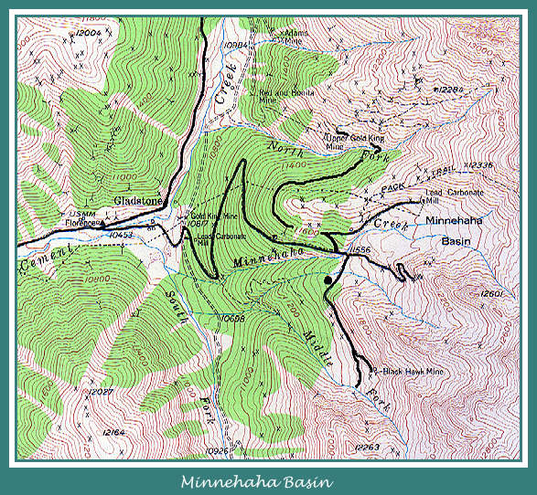
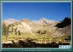
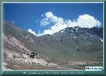
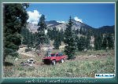
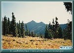
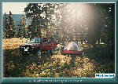
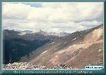
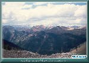

Contributed by Miles Lumbard
Photographs by Miles Lumbard

| Minnehaha Basin sits east of Gladstone, high up on the side of Bonita Mountain. It is one of the most beautiful and peaceful places in the San Juans. There are a couple of private cabins up here now, but you can still find plenty of places to camp out. On a crisp, clear night, the stars are so bright, you can read by them! |
| The trail up to the basin takes off from the main road up behind the mill in Gladstone. You have to wind your way around to the right of the large main building, then up and around to the left, behind and above the mill. The trail will be a sharp turn to the right. The trail isn't that tough, but it should only be attempted in a real 4x4. All-wheel drive cars and vans need not apply. |
| Once you've gotten up behind the metal buildings, you'll pass the ruins of the Lead Carbonate Mill. The mill served the Lead Carbonate Mine, high up in the basin. The Lead Carbonate mine was a noted producer of both gold and silver. A mill was built at the mine site, but was destroyed by an avalanche, and fire. The mill at Gladstone was constructed to replace it, and ore was moved by trucks. |
| As you ascend through the pines, there are a few side trails, but most all are private and or gated. Once you come out of the trees, your in Minnehaha Basin. Straight ahead on the south slope of a sort of knob that sticks up in the center of the basin, are the remains of the Minnehaha Mine. The road forks here, and the right fork crosses a small stream, and heads off across a meadow to the Blackhawk mine. Just across the stream, and back down towards the trees is a mighty pleasant place to camp. |
| The left fork takes you up around a knob, passed a private cabin, and to the remains of the Lead Carbonate mine. From here, the trail snakes out across the west face of Bonita mountain. It heads off towards the upper works of the legendary Gold King mine. The views of the Red Mountains, and the Cement Creek valley are spectacular from this part of the trail. You can see the Corkscrew across the valley, and the Hurricane Pass trail at the head of the valley. This part of the trail is very narrow, and the only place to turn around is at the group of cabins on the left of the trail. On beyond the cabins, a large quartz vein, possibly that of the Sunnyside and Gold King mines, outcrops on the surface. |
|
 |
Welcome to Minnehaha Basin
(102k) |

|
 |
The remains of the Lead
Carbonate Mine (124k) |

|
 |
Time for lunch. Now this is
dining al fresco! (148k) |

|
 |
Minnehaha Basin basks in
the afternoon sunlight (127k) |

|
 |
A mighty pleasant
place to camp out (151k) |

|
 |
The Corkscrew Trail snakes it's way
up the back of Red Mtn. #1 (104k) |

|
 |
Another view of the Red Mountains
(97k) |


|
The Narrow Gauge Circle is written, maintained,and hosted by: Mark L. Evans Send Comments to:Mark L. Evans All original materials, text, and digital images Copyright © 1996-2017 Mark L. Evans. All rights reserved. Imitation is said to be the "sincerest" form of flattery.....Please don't flatter us without permission. |